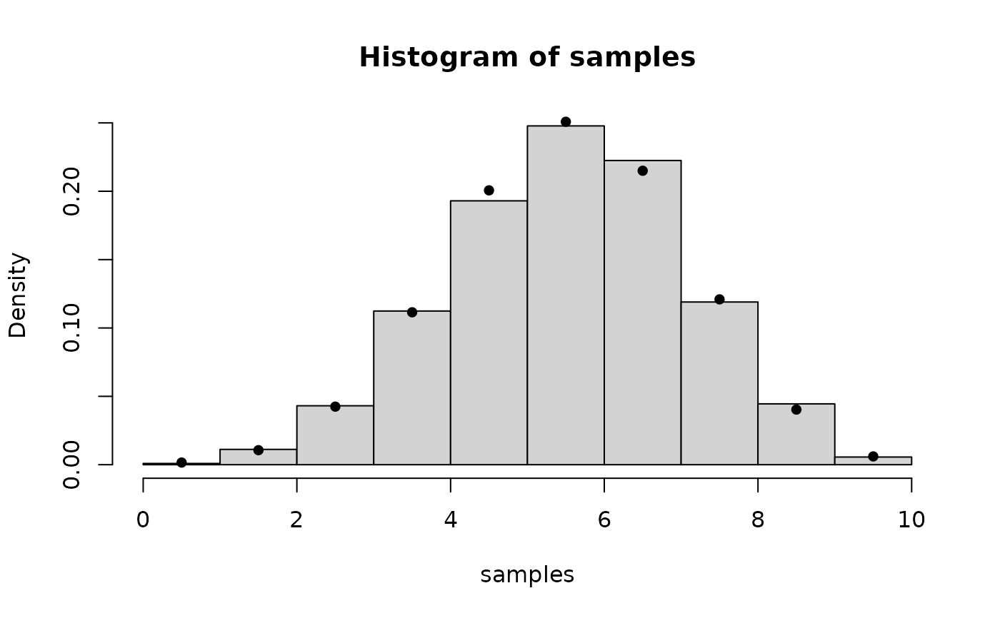

Samples (with replacement) from the probability distribution specified by pmf.
Examples
library(bayesRecon)
# Let's build the pmf of a Binomial distribution with parameters n and p
n <- 10
p <- 0.6
pmf_binomial <- apply(matrix(seq(0,n)),MARGIN=1,FUN=function(x) dbinom(x,size=n,prob=p))
# Draw samples from the PMF object
set.seed(1)
samples <- PMF.sample(pmf=pmf_binomial,N_samples = 1e4)
# Plot the histogram computed with the samples and the true value of the PMF
hist(samples,breaks=seq(0,n),freq=FALSE)
points(seq(0,n)-0.5,pmf_binomial,pch=16)
